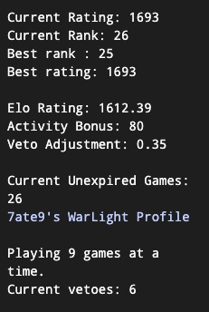

General Things regarding the MTL
Shortly after the initiation of the MTL, an introduction video was uploaded in YouTube that is still quite relevant today Video by ps/ Deadman Below, I am quoting more or less what is written in the main-page of the MTL's site by Beren.
How is the MTL different than the official ladders?
- Utilises 51 instead of 1 template.
- Is a Continuous Ladder, unlike the Seasonal Ladder.
- No weekly/monthly reward systems.
- Different Boot settings, vacation policy and rating system
Boot Settings: The MTL uses a 3 day auto-boot setting. You have 3 days to join the game and if you decline a game or fail to join it in time, you receive an automatic loss. If you fail to join 5 games in a row you are removed from the ladder. The MTL honors vacations, meaning you will not boot your games. You will however automatically get removed from the ladder when going on a vacation and get automatically added back as soon as you return.
Template introduction: As a new player, you start with 5 templates unlocked and unlock a new template every time you win a game. However, you can also elect to unlock all templates immediately at any time. If you rise above 1900 all templates automatically unlock.
Vetoes: You can veto up to 35 templates if you don't want to play games on them, but vetoing more templates will have an impact on the veto adjustment portion of your rating.
Matchmaking allocation:
- Games are allocated every 2 hours.
- The MTL prioritises matching players with similar Elo Rating that you also haven't played too recently. You can't be matched with someone ranked more than 20 places above or below you when ordered by Elo Rating.
- Two players can play against each other at most once every 5 days.
- The matchmaking template selection algorithm excludes all templates that either player has vetoed or not yet unlocked. If either player is not a member, then it also excludes all member-only templates. Then it also excludes all templates that either player has played in their last 5 games. Then it chooses randomly from the remaining active templates. If no template is left in the pool, Strat MME is chosen.
Ranking and MTL trophy: First and foremost, when you first join the ladder you are still unranked. You have a rating but it doesn't count towards the leaderboards. All players joined to the ladder with 20 or more completed games in the last 150 days are ranked.
A Player earns the MTL trophy (which is also displayed on your Warzone profile), by finishing 10 games in first place without ever dropping out of first. These games don't all have to be wins if you have enough of a buffer to stay in first place. Currently, only 11 players have earned the trophy and 9 more were unable to win 10 games while retaining 1st place (in order of total number of days in first rank on the MTL as of January 2025, Table MTL Trophies).
Ranking, Elo & Veto Adjustment

In regards with Figure profile_rankings, upon opening your any profile in the MTL you should be able to spot certain numbers/parameters that influence your final ranking, including:
- Current Rating (CR)
- Elo Rating (ER)
- Veto Adjustment (VA)
- Activity Bonus (AB)
Needless to say, Current Rank is derived when listing all players based on their Current Rating from top to bottom, Best rank is self-explanatory and Best Rating is the highest Current Rating you've had till today. The Ladder Rankings follow CR, which is the rounded integer of the following equation:
CR = ER + AB + VA
Consequently, the final Elo, or so called Current Ranking, abbreviated as CR or simply Elo later on, consists of 3 parameters.
Elo Rating - ER
The MTL uses a veto-adjusted version of the MWElo Rating System.
Imagine 2 players A and B, with ER equal to r(A) and r(B) respectively before their game. In order to calculate their ER after the match, denoted as r'(A) and r'(B), the algorithm:
- Transformation of r to R:
- R(A) = 10(r(a)/400)
- R(B) = 10(r(b)/400)
- Expected Result - E:
- E(A) = R(A) / (R(A) + R(B))
- E(B) = R(B) / (R(A) + R(B))
- Final Score - S (Binary):
- S(A) = 1, if A wins | 0, if A loses
- S(B) = 0, if A wins | 1, if A loses
- New Elo - ER:
- r'(A) = r(A) + K × (S(A) - E(A))
- r'(B) = r(B) + K × (S(B) - E(B))
Given as an example, for 2 players A and B with ER r(A) = 1639 and r(B) = 1635 where player A won (S(A)=1 and S(B) = 0):
- Transformation of r to R:
- R(A) = 10(1639/400) = 12516.99
- R(B) = 10(1635/400) = 12232.07
- Expected Result - E:
- E(A) = 12516.99 / (12516.99 + 12232.07) = 0.5057562
- E(B) = 12232.07 / (12516.99 + 12232.07) = 0.4942438
- Final Score - S (Binary):
- S(A) = 1
- S(B) = 0
- New Elo - ER:
- r'(A) = 1639 + 32 × (1 - 0.5057562) = 1654.816
- r'(B) = 1635 + 32 × (0 - 0.4942438) = 1619.184